AI 사진 제작자에게
반드시 필요한
고급 사진 용어 15가지
AI 사진 제작자에게 꼭 필요한 고급 사진 용어 30개를 정리했어요. 사진가들이 실제로 쓰는 이름이라 AI도 그대로 알아들어요. 용어마다 뜻과 분위기를 함께 담았어요.
쓰는 법
- 요청 문장에는 찍을 대상(상품, 인물)과 장면을 먼저 쓰고, 끝에 촬영 용어를 영어로 붙여 보세요.
- 사진 느낌(시네마틱), 배경(대리석, 벨벳), 렌즈(85mm)처럼 성격이 다른 용어 가운데 한두 개만 골라 보세요.
- 가지고 있는 상품 사진을 바꾸고 싶다면 사진을 함께 올리고, 배경이나 분위기만 바꿔 달라는 말 뒤에 용어를 붙여 보세요.
- AI 영상 도구에서도 똑같아요. 장면 설명 끝에 촬영 용어를 붙이면 돼요.
영상에 나온 고급 사진 용어 15개
번호는 영상에 나온 순서와 같아요. 그림은 토큰전쟁 마스코트 슬라임으로 만든 예시예요.
영화 한 장면 같은 색과 분위기입니다.
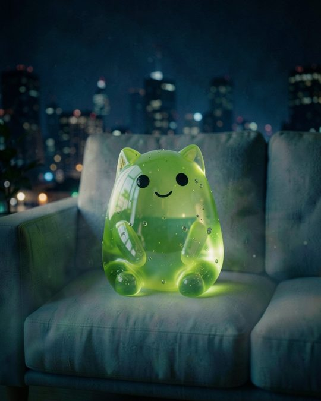
잡지 화보처럼 연출한 사진입니다.
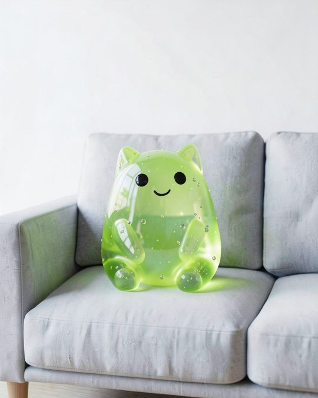
깨끗한 배경과 조명으로 찍은 상품 사진입니다.
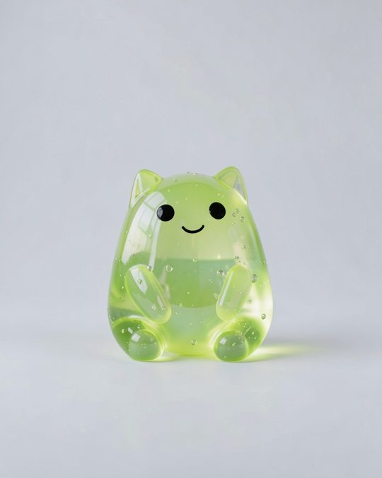
그림자가 부드럽게 퍼지는 빛입니다.
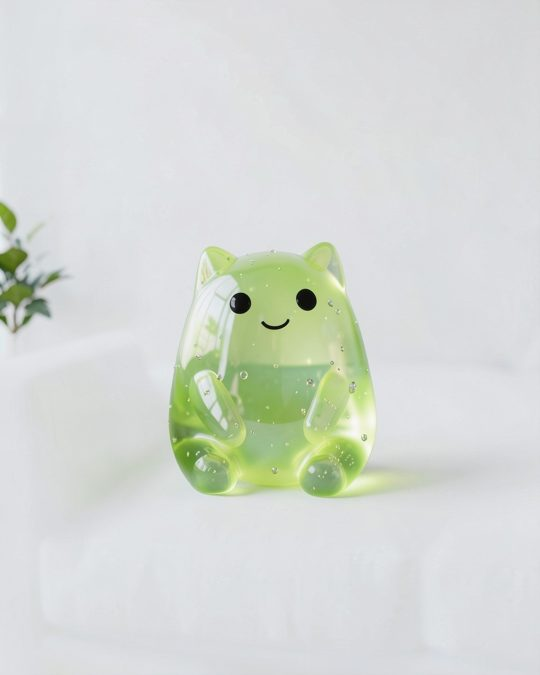
창가 햇빛으로 찍은 인물 사진입니다.
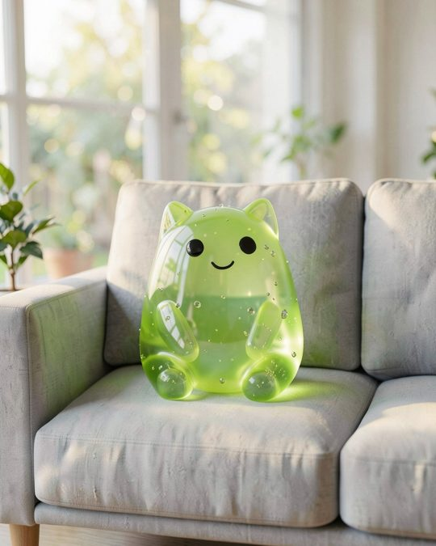
해 질 녘 해를 등지고 찍어 윤곽이 빛나는 빛입니다.
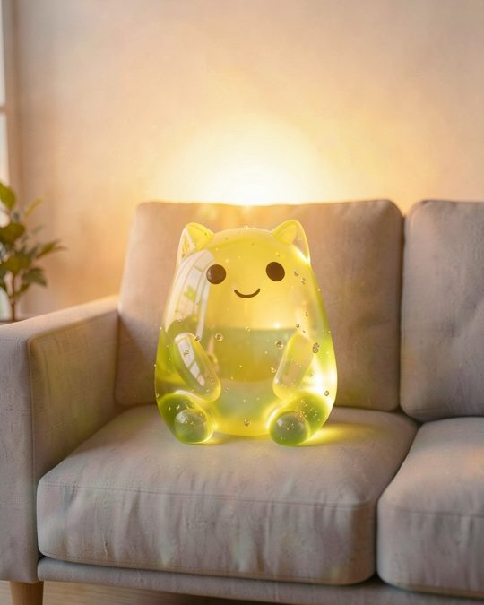
대상만 선명하고 배경은 흐린 사진입니다.
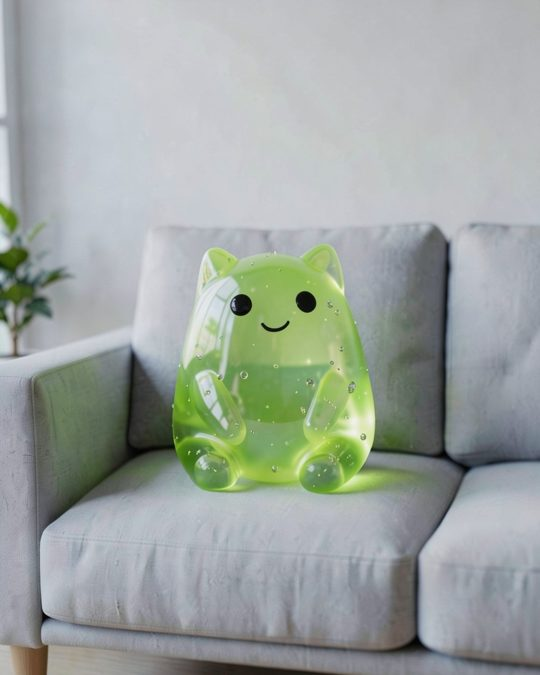
인물 사진에 많이 쓰는 렌즈로, 배경이 부드럽게 흐려집니다.
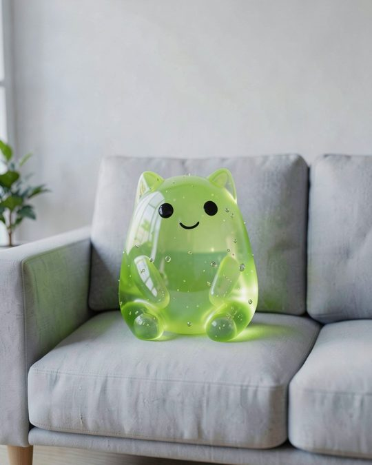
아주 가까이서 작은 부분을 크게 찍는 촬영입니다.
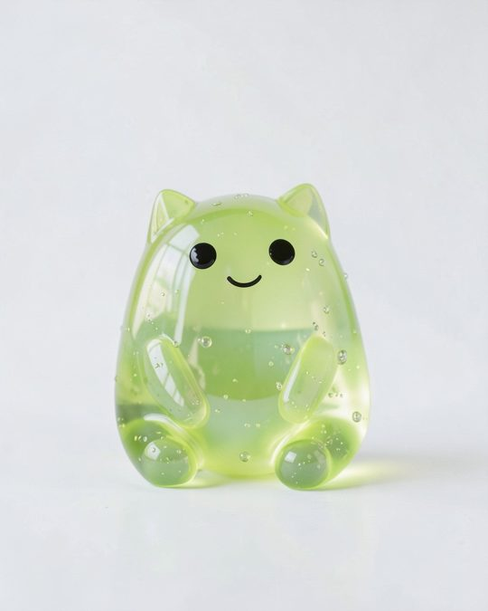
대상 하나와 넓은 빈 공간으로 만든 구도입니다.
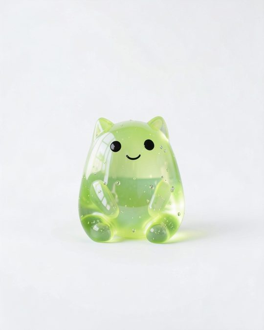
반사가 적은 차분한 표면입니다.
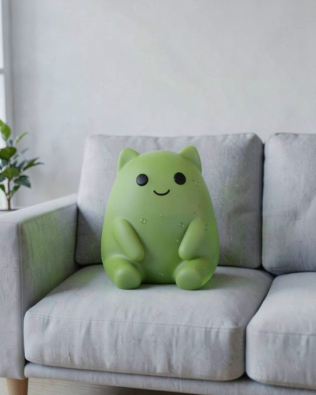
대리석 바닥과 벽 배경입니다.
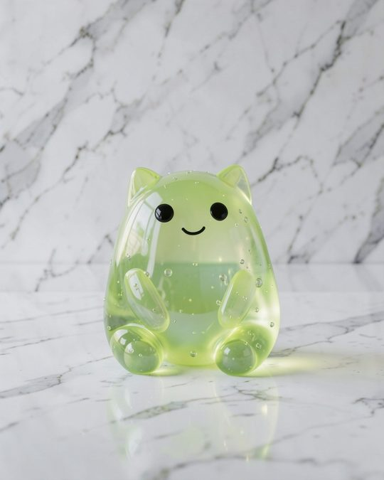
짙은 벨벳 천 배경입니다.
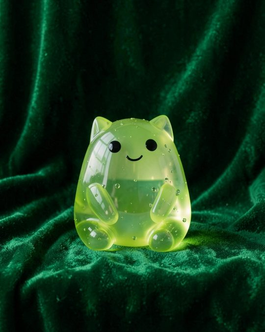
필름 사진처럼 바랜 색입니다.
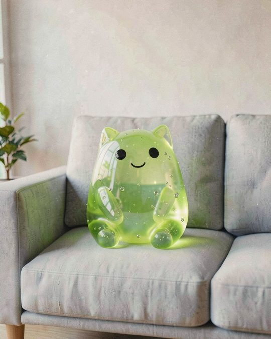
아주 세밀하고 선명하게 표현하라는 말입니다.
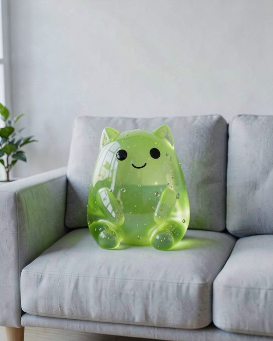
추가 고급 사진 용어 15개
영상에 나오지 않은 용어 15개예요. 일부 용어에는 예시 그림을 붙였어요.
명품 광고처럼 연출한 패션 사진입니다.
스튜디오에서 여러 조명으로 맞춘 빛입니다.
뒤에서 비춰 윤곽선을 밝히는 빛입니다.
경계가 흐린 옅은 그림자입니다.
바닥이나 표면에 살짝 비치는 반사입니다.
이음매 없는 종이 배경입니다.
어둡고 차분한 색조입니다.
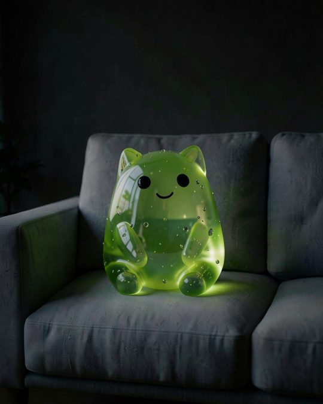
베이지·회색처럼 튀지 않는 색 조합입니다.
1950~60년대풍 가구와 실내 양식입니다.
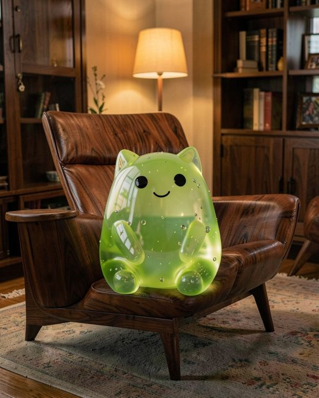
결이 보이는 무광 금속 표면입니다.
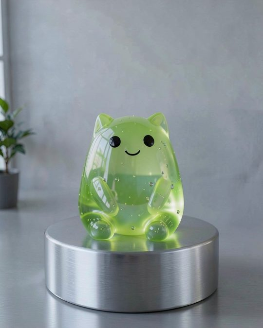
윤기 있는 실크 천을 늘어뜨린 배경입니다.
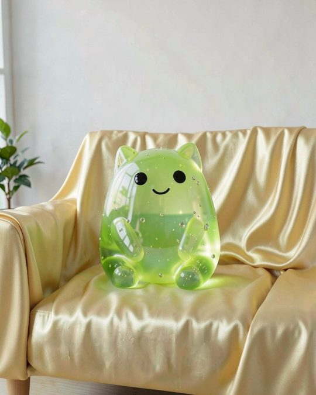
화면을 가로세로 셋으로 나눈 선 위에 대상을 두는 구도입니다.
좌우가 맞는 안정된 구도입니다.
밝은 곳과 어두운 곳을 모두 살린 사진입니다.
필름이나 센서가 커서 계조가 풍부한 카메라입니다.
매일 AI 소식은 @tokenwar_ai